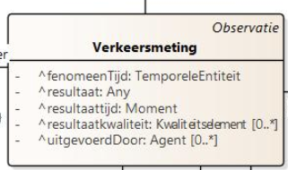
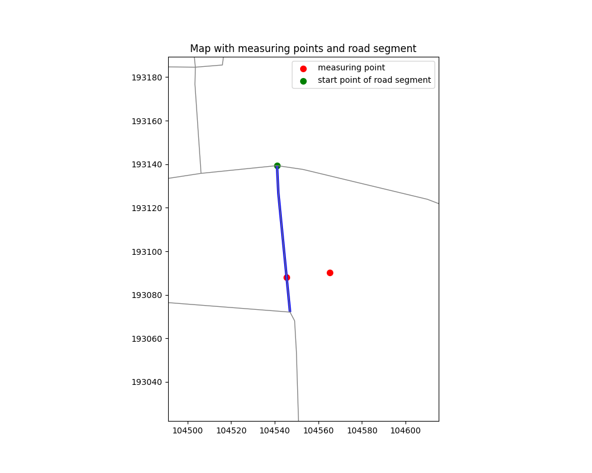

Documentatie OSLO mapping data fietstelpunten
Introductie fietstelpunten
 Fietstelpalen hebben ook een motiverende en sensibiliserende functie, fietsers weten dat ze niet alleen zijn en ook de omgeving ziet dat mensen bewust een mobiliteitskeuze maken. De data die we hieruit verkrijgen helpt ons het fietsbeleid te optimaliseren.
Fietstelpalen hebben ook een motiverende en sensibiliserende functie, fietsers weten dat ze niet alleen zijn en ook de omgeving ziet dat mensen bewust een mobiliteitskeuze maken. De data die we hieruit verkrijgen helpt ons het fietsbeleid te optimaliseren. 
Input data
Gegevens komen van een tellus van AWV. Datasets worden in bulk gepubliceerd via
Hierover dit: Meetpunt (blauwe pin op de kaart) ligt langs een fietsbrug in Machelen en meer bepaald langs Wegsegment https://data.vlaanderen.be/id/wegsegment/662242:

Coordinaatinfo van deze fietsbrug vinden we hier https://api.basisregisters.dev-vlaanderen.be/v1/wegsegmenten/662242, waaruit we kunnen afleiden dat het beginpunt rechtsonder ligt en het eindpunt rechtsboven, het meetpunt ligt dus aan de kant vd weg die gelijkloopt met de digitalisatierichting.
Brucargo ligt in het oosten, Machelen in het westen. De IN en OUT bij de rijrichtingen matchen dus resp met de gelijklopende wegkant en de tegengestelde wegkant.
Er rijden tussen 7u45 en 8u op 1/8/2019 dus 7 fietsers richting Machelen en 4 richting Brucargo.
Aanpak
We maken twee Verkeersmetingen, vrm001 en vrm002, één per Rijrichting. Het geobserveerdKenmerk “_:mpt001” is voor beide metingen hetzelfde, nl het aantal fieters waarbij “Aantal” het type kenmerk is en “Fiets” het voertuigtype. Deze waarden komen uit codelijsten die worden opgesteld in het kader van de implementatie van de Mobility dataspace.
Resultaat is in beide gevallen een integer. De meting is uitgevoerdMet mti001, we veronderstellen dat dit een Sensor is vh type “PneumatischeTelslang” en dat deze “Assentelling” als Observatieprocedure implementeert. Hier verwijzen we naar de codelijst:
De fenomeentijd is voor beide metingen dezelfde, nl een periode op 1/8/2019 tussen 7u45 en 8u. We zouden de metingen rechtstreeks kunnen koppelen aan de Rijrichtingen waarop ze slaan (geobserveerdObject is Rijrichting x), maar we kiezen er hier voor om het Verkeersmeetpunt als geobserveerdObject op te geven, dat deze Rijrichtingen bemonstert.
Deze werkwijze benadert meer de OpenLR-aanpak waarmee we compatibel willen zijn.
We maken hiervoor twee inline Verkeersmeetpunten, één per Rijrichting die we bemonsteren.
Beide Rijrichtingen worden eigenlijk met hetzelfde Verkeersmeetpunt gemonitord (telslang over de ganse weg). Probleem is dat we dan met twee bemonsterdeObjecten zitten voor eenzelfde Verkeersmeting en dus niet meer duidelijk is op welke Rijrichting het ultiem geobserveerdObject is van de Verkeersmeting.
ISO O&M laat dus niet toe om een Bemonsteringsobject ruimer te definiëren dan het object waarop de meting slaat. Oplossing die het zelf aanbiedt is om dmv de associatie geassocieerdBemonsteringsobject en de klasse Bemonsteringsobjectcomplex een omvattend Bemonsteringsobject te creëren.
Het omvattend Verkeersmeetpunt correspondeert met de site vermeld in de data en toevoeging daarvan aan het datavoorbeeld zou meteen het probleem oplossen dat de gegevens daarvan (situering, beheerder, datum inGebruikname etc) momenteel ontbreken.
Om de twee inline Verkeersmeetpunten te situeren langs het Wegsegment maken we een Puntreferentie aan, ttz we geven aan waar het punt ligt door de afstand op te geven (offset in OpenLR) tov het begin vd geometrie van het Wegsegment.
Alternatief zou zijn om de ligging van beide meetpunten gewoon dmv de coördinaten van het omvattend meetpunt te beschrijven, deze coördinaten staan ook in de aangeleverde data. Hier wordt • Toepassingsrichting is “bothDirections” omdat de meetpunten beide wegkanten monitoren (telslang over de ganse weg). Alternatief zou twee aparte netwerkreferenties omvatten, een per richting.
opPositie is momenteel niet gekend, moet berekend worden uit de geometrie vh Wegsegment, rekening houdend met de ligging vh startpunt vd geometrie. Wat we alvast wel weten is dat het startpunt in het oosten ligt en we dus van daaruit de afstand moeten bepalen.
We beschrijven beide Rijrichting elk met hun ligging tov het Wegsegment, de richting naar Brucargo loopt west-oost en heeft dus als richting “inOpppositeDirection”, de andere richting loopt oost-west en heeft “inDirection” als richting.
we bepaalde dit manueel op basis van de richting van het Wegsegment en de beschrijving, maar in praktijk zal dit automatisch moeten gebeuren op basis van de IN en OUT waarden bij richting en data.
Merk op dat we in al de netwerkreferenties referen naar Wegsegment https://data.vlaanderen.be/id/wegsegment/662242 verwijzen en niet Wegsegment T2110002. Hoogstwaarschijnlijk gaat het echter over hetzelfde Wegsegment. TODO: te verifiëren.
Verkeersmeting
De dataset beschrijft het aantal fietsers dat is gedetecteerd door een verkeerssensor _:mti001, uitgevoerd op een verkeersmeetpunt _:mpt001, gedurende een bepaalde periode :_fenomtime001. Het ´type´ veld geeft aan dat de sensor alleen fietsers meet, en het ´aantal´ veld geeft aan dat er geen fietsers zijn waargenomen.
{
"type": "FIETSERS",
"aantal": 60
}
Aangezien er geen specifieke definities (a.d.h. van codelijsten) bestaan voor voertuitgtypes (bv. auto, fiets, enz.) en verkeerskenmerktype (bv. aantal, snelheid, enz.) dienen deze in codelijsten worden gedefinieerd. Deze werden hier uitgewerkt:
“Verkeerskenmerk.voertuigType”: “cl-vrt:fiets” verwijst dus naar .
Via het OSLO model verkeersmetingen, is het mogelijk om volgende klassen te gaan definiëren: 
Het teken ‘^’ geeft aan, dat deze klassen zijn overgeërfd van een ander applciatieprofiel.
{
"@context": [
"https://data.vlaanderen.be/doc/applicatieprofiel/verkeersmetingen/ontwerpstandaard/2023-03-14/context/Verkeersmetingen-ap.jsonld",
{
"cl-vrt": "https://data.vlaanderen.be/doc/concept/VkmVoertuigTypes/",
"cl-vkt": "https://data.vlaanderen.be/doc/concept/VkmVerkeersKenmerkType/"
}
],
"@graph": [
{
"@id": "_:vrm001",
"@type": "Verkeersmeting",
"Verkeersmeting.geobserveerdKenmerk": {
"@type": "Verkeerskenmerk",
"Verkeerskenmerk.type": "cl-vkt:aantal",
"Verkeerskenmerk.voertuigType": "cl-vrt:fiets"
},
"Verkeersmeting.resultaat": 60,
"Verkeersmeting.uitgevoerdMet": "_:mti001",
"Verkeersmeting.geobserveerdObject": "_:mpt001",
"Verkeersmeting.fenomeenTijd": ":_fenomtime001"
}
]
}
Verkeersmeetpunt
De dataset beschrijft de locatie(lengte- en breedtegraad) van het meetpunt waar de sensor de verkeersmetingen uitvoert.
{
"site ID" : "1",
"site nr" : "100046096",
"long": 4.456121776137429,
"lang": 50.91618331151478
}
{
"@id": "_:mpt001",
"@type": "Verkeersmeetpunt",
"Verkeersmeetpunt.geometrie": "_:g001",
},
{
"@id": "_:g001",
"@type": "Punt",
"Geometrie.wkt": {
"@value": "<http://www.opengis.net/def/crs/EPSG/0/4326> Point(50.91618331151478 4.456121776137429)",
"@type": "geosparql:wktLiteral"
}
},
Wegsegment en offset van het meetpunt
Om OpenLR compliant te zijn, dient bij een verkeersmeting zowel de locatie van het meetpunt (coördinaten), het wegsegment (a.d.v. begin en eindknoop, en eventuele shape knopen) en de offset van het meetpunt (de afstand van het beginknooppunt en het middelpunt) beschreven te zijn.
Aangezien enkel de locatie van het meetpunt wordt weergegeven, dient zowel de offset als het wegsegment berekend te worden. Dit gebeurd met een externe GIS functie tijdens de implementatie.

Als basiskaart kan gekozen worden om gebruik te maken van bijvoorbeeld openstreetmap of het wegenregister.
Een dergelijke functie werd hier reeds uitgewerkt in de vorm van een Python script:
Wegsegment
Volgens het OSLO model verkeersmetingen is de geometriemiddenlijn van het wegsegment verplicht om mee te geven.
Hieronder wordt weergegeven hoe deze polylijn wordt omschreven volgens een wktLiteral. Het is belangrijk dat het projectiesysteem hier wordt aan meegegeven.
EPSG4326 slaat op de projectie WGS84 (latitude, longitude), EPSG 31370 slaat op de projectie Lambert72 (x,y).
{
"@id": "_:wgs001",
"@type": "Wegsegment",
"Wegsegment.beginknoop": "_:wgkn001",
"Wegsegment.eindknoop": "_:wgkn002",
"Wegsegment.geometriemiddenlijn": {
"@type": "LineString",
"Geometrie.wkt": {
"@value": "<http://www.opengis.net/def/crs/EPSG/0/4326> LINESTRING (30 10, 10 30, 40 40)",
"@type": "geosparql:wktLiteral"
}
}
}
Offset
In het uitgewerkt voorbeeld hieronder wordt weergegeven hoe de afstand van het beginpunt tot het meetpunt wordt omschreven. In dit fictief voorbeeld wordt een offset van 300m omschreven. Het is belangrijk dat hier de toepassingsRichting voor deze puntreferentie wordt meegegeven (is verplicht in het OSLO model).
{
"@id": "_:pr001",
"@type": "Puntreferentie",
"Puntreferentie.opPositie": {
"@type": "Lengte",
"KwantitatieveWaarde.waarde": "300",
"KwantitatieveWaarde.standaardEenheid": {
"@value": "m",
"@type": "ucum:ucumunit"
}
},
"Linkreferentie.toepassingsRichting": "cl-trt:bothDirections"
},
Verkeersmeting.fenomeenTijd
De bron data geeft de tijdperiode met de velden van en tot:
{
"van":"2023-06-01 00:00:00.0",
"tot": "2023-06-01 00:15:00.0"
}
De OSLO data mapping hiervan is de eigenschap Verkeersmeting.fenomeenTijd.
"Verkeersmeting.fenomeenTijd": {
"@type": "time:ProperInterval",
"time:hasBeginning": {
"@type": "time:Instant",
"time:inXSDDateTime": {
"@type": "xml-schema:dateTime",
"@value": "20230601T00:00:00.000"
}
},
"time:hasEnd": {
"@type": "time:Instant",
"time:inXSDDateTime": {
"@type": "xml-schema:dateTime",
"@value": "20230601T00:00:15.000"
}
}
}